Sunflowers are typically grown during the warm seasons of the year, primarily in spring and summer. They require full sun and warm temperatures to thrive. Sunflowers are cultivated in many states across the United States, with some of the largest producers being North Dakota, South Dakota, Minnesota, Kansas, and Colorado. North Dakota is particularly known for its significant sunflower production, both in terms of cultivation and market share.
Sunflowers grow best in well-drained, fertile soils with a pH between 6.0 and 7.5. They can tolerate various soil types, including loamy, sandy, and clay soils, as long as the soil is not waterlogged. However, they prefer soils with good organic matter content.
Generally, sunflowers require regular watering, especially during the flowering stage, and may benefit from fertilization with nitrogen, phosphorus, and potassium based on soil testing results. Additionally, pest and disease management are important considerations for sunflower cultivation.
सूर्यफूल सामान्यतः वर्षाच्या उबदार हंगामात, प्रामुख्याने वसंत ऋतु आणि उन्हाळ्यात घेतले जातात. त्यांना वाढण्यासाठी पूर्ण सूर्य आणि उबदार तापमान आवश्यक आहे. उत्तर डकोटा, साउथ डकोटा, मिनेसोटा, कॅन्सस आणि कोलोरॅडो हे सर्वात मोठे उत्पादक असलेले काही युनायटेड स्टेट्समधील अनेक राज्यांमध्ये सूर्यफुलाची लागवड केली जाते. उत्तर डकोटा विशेषतः सूर्यफूल उत्पादनासाठी प्रसिद्ध आहे, लागवड आणि बाजारातील वाटा या दोन्ही बाबतीत.
6.0 आणि 7.5 च्या दरम्यान pH असलेल्या सुपीक मातीत सूर्यफूल चांगली वाढतात. जोपर्यंत मातीमध्ये पाणी साचत नाही तोपर्यंत ते चिकणमाती, वालुकामय आणि चिकणमाती मातीसह विविध प्रकारचे माती सहन करू शकतात. तथापि, ते चांगल्या सेंद्रिय पदार्थांचे प्रमाण असलेली माती पसंत करतात.
सामान्यतः, सूर्यफुलाला नियमित पाणी पिण्याची गरज असते, विशेषत: फुलांच्या अवस्थेत, आणि माती परीक्षणाच्या परिणामांवर आधारित नायट्रोजन, फॉस्फरस आणि पोटॅशियमसह खताचा फायदा होऊ शकतो. याव्यतिरिक्त, सूर्यफूल लागवडीसाठी कीड आणि रोग व्यवस्थापन हे महत्त्वाचे विचार आहेत.
6. SUGARCANE / 6.ऊस
 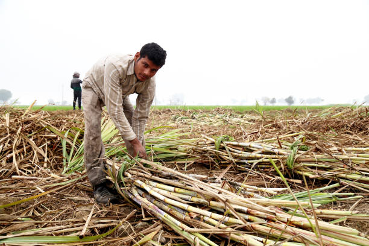
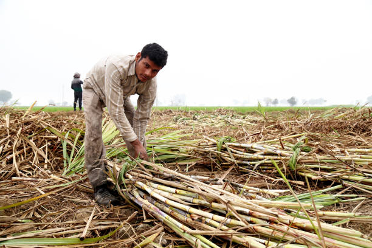
Sugarcane is a tropical and subtropical crop that is typically grown in regions with a long and warm growing season. It is generally planted at the beginning of the wet season or during the spring months, as sugarcane requires ample moisture for initial growth. The exact timing can vary depending on the specific location and climate conditions.
Sugarcane grows best in well-drained, fertile soils with good moisture retention. It can thrive in a variety of soil types, including sandy loam, clay loam, and organic-rich soils. However, it prefers soils with good drainage to prevent waterlogging, which can inhibit root growth and lead to disease issues. Additionally, sugarcane requires a soil pH between 5.5 and 8.0 for optimal growth.
Sugarcane is a relatively labor-intensive crop that requires significant time and resources for cultivation, especially during planting and harvesting. The time from planting to harvest typically ranges from 12 to 18 months, depending on the variety and growing conditions. Sugarcane also requires regular irrigation, fertilization, and weed control throughout its growth cycle. Harvesting is typically done mechanically, but it still requires skilled labor and specialized equipment. Additionally, sugarcane cultivation may require inputs such as fertilizers, herbicides, and pesticides to ensure optimal yields and quality. Overall, sugarcane cultivation can be resource-intensive, but it can be highly profitable in regions with suitable climate and soil conditions.
While sugarcane is not particularly high in vitamins and minerals, it does contain small amounts of nutrients like vitamin C, calcium, magnesium, potassium, and iron.
ऊस हे एक उष्णकटिबंधीय आणि उपोष्णकटिबंधीय पीक आहे जे सामान्यत: दीर्घ आणि उबदार हंगाम असलेल्या प्रदेशांमध्ये घेतले जाते. साधारणपणे ओल्या हंगामाच्या सुरुवातीला किंवा वसंत ऋतूच्या महिन्यांत लागवड केली जाते, कारण उसाला सुरुवातीच्या वाढीसाठी पुरेसा ओलावा आवश्यक असतो. विशिष्ट स्थान आणि हवामान परिस्थितीनुसार अचूक वेळ बदलू शकते.
ऊस चांगल्या निचऱ्याच्या, सुपीक जमिनीत चांगला ओलावा टिकवून ठेवतो. हे वालुकामय चिकणमाती, चिकणमाती चिकणमाती आणि सेंद्रिय-समृद्ध मातीसह विविध प्रकारच्या मातीमध्ये वाढू शकते. तथापि, ते पाणी साचण्यापासून रोखण्यासाठी चांगल्या निचरा असलेल्या जमिनींना प्राधान्य देते, ज्यामुळे मुळांच्या वाढीस प्रतिबंध होतो आणि रोगाच्या समस्या उद्भवू शकतात. याव्यतिरिक्त, उसाच्या चांगल्या वाढीसाठी मातीचा पीएच 5.5 आणि 8.0 च्या दरम्यान आवश्यक आहे.
ऊस हे तुलनेने श्रम-केंद्रित पीक आहे ज्याच्या लागवडीसाठी विशेषत: लागवड आणि कापणी दरम्यान लक्षणीय वेळ आणि संसाधने लागतात. लागवडीपासून कापणीपर्यंतचा कालावधी सामान्यतः 12 ते 18 महिन्यांपर्यंत असतो, विविध आणि वाढत्या परिस्थितीनुसार. उसाला त्याच्या वाढीच्या चक्रात नियमित सिंचन, खते आणि तण नियंत्रणाची देखील आवश्यकता असते. कापणी सामान्यतः यांत्रिक पद्धतीने केली जाते, परंतु तरीही कुशल कामगार आणि विशेष उपकरणे आवश्यक असतात. याव्यतिरिक्त, ऊसाच्या लागवडीसाठी उत्तम उत्पादन आणि गुणवत्ता सुनिश्चित करण्यासाठी खते, तणनाशके आणि कीटकनाशके यासारख्या इनपुटची आवश्यकता असू शकते. एकूणच, ऊसाची लागवड संसाधन-केंद्रित असू शकते, परंतु योग्य हवामान आणि मातीची परिस्थिती असलेल्या प्रदेशांमध्ये ती अत्यंत फायदेशीर ठरू शकते.
उसामध्ये जीवनसत्त्वे आणि खनिजे विशेषत: जास्त नसली तरी त्यात व्हिटॅमिन सी, कॅल्शियम, मॅग्नेशियम, पोटॅशियम आणि लोह यासारखे पोषक घटक कमी प्रमाणात असतात.
7. COTTON / 7.कापूस


Cotton is typically grown during the warm seasons of the year, primarily in spring and summer. It requires a frost-free growing season of around 160 to 200 days to reach maturity. The exact timing of planting and harvesting can vary depending on the specific region and climate conditions.
Cotton thrives in well-drained soils with good moisture retention. It can grow in a variety of soil types, including sandy loam, clay loam, and silt loam, but it prefers deep, fertile soils with a pH between 5.8 and 6.5. Cotton is sensitive to waterlogging, so soils with good drainage are essential to prevent root rot and other issues. Additionally, cotton benefits from soils rich in organic matter and nutrients.
Cotton cultivation requires significant time and resources, especially in terms of land preparation, planting, irrigation, pest control, and harvesting. The time from planting to harvesting typically ranges from 5 to 6 months, depending on the variety and growing conditions. Cotton is a relatively labor-intensive crop, especially during planting and harvesting seasons when additional labor may be required for tasks such as weed control and cotton picking. Additionally, cotton cultivation may require inputs such as fertilizers, herbicides, and pesticides to ensure optimal yields and quality. Overall, cotton cultivation can be resource-intensive, but it can also be economically rewarding for growers in regions with suitable climate and soil conditions.
कापूस सामान्यतः वर्षाच्या उबदार हंगामात, प्रामुख्याने वसंत ऋतु आणि उन्हाळ्यात घेतले जाते. परिपक्वतेपर्यंत पोहोचण्यासाठी सुमारे 160 ते 200 दिवसांचा दंव-मुक्त वाढीचा हंगाम आवश्यक आहे. लागवड आणि कापणीची अचूक वेळ विशिष्ट प्रदेश आणि हवामानाच्या परिस्थितीनुसार बदलू शकते.
चांगल्या निचरा होणाऱ्या जमिनीत कापूस चांगला ओलावा टिकवून ठेवतो. हे वालुकामय चिकणमाती, चिकणमाती चिकणमाती आणि गाळाच्या चिकणमातीसह विविध प्रकारच्या मातीमध्ये वाढू शकते, परंतु ते 5.8 आणि 6.5 दरम्यान pH असलेल्या खोल, सुपीक मातींना प्राधान्य देते. कापूस पाणी साचण्यास संवेदनशील आहे, त्यामुळे मुळे कुजणे आणि इतर समस्या टाळण्यासाठी चांगला निचरा असलेली माती आवश्यक आहे. याव्यतिरिक्त, सेंद्रिय पदार्थ आणि पोषक तत्वांनी समृद्ध असलेल्या मातीपासून कापसाचा फायदा होतो.
कापूस लागवडीसाठी विशेषत: जमीन तयार करणे, लागवड करणे, सिंचन करणे, कीड नियंत्रण आणि कापणी करणे या दृष्टीने महत्त्वपूर्ण वेळ आणि संसाधने लागतात. लागवडीपासून कापणीपर्यंतचा कालावधी साधारणपणे 5 ते 6 महिन्यांचा असतो, विविध आणि वाढत्या परिस्थितीनुसार. कापूस हे तुलनेने श्रम-केंद्रित पीक आहे, विशेषत: लागवड आणि कापणीच्या हंगामात जेव्हा तण नियंत्रण आणि कापूस वेचणी यासारख्या कामांसाठी अतिरिक्त मजुरांची आवश्यकता असू शकते. या व्यतिरिक्त, कापूस लागवडीसाठी उत्तम उत्पादन आणि गुणवत्ता सुनिश्चित करण्यासाठी खते, तणनाशके आणि कीटकनाशके यासारख्या इनपुटची आवश्यकता असू शकते. एकूणच, कापूस लागवड संसाधन-केंद्रित असू शकते, परंतु योग्य हवामान आणि मातीची परिस्थिती असलेल्या प्रदेशातील उत्पादकांसाठी ते आर्थिकदृष्ट्या फायदेशीर देखील असू शकते.
8. MANGO / 8.आंबा
 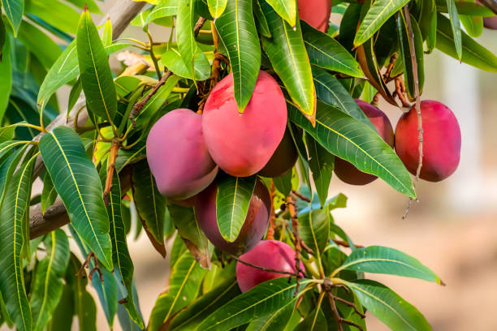
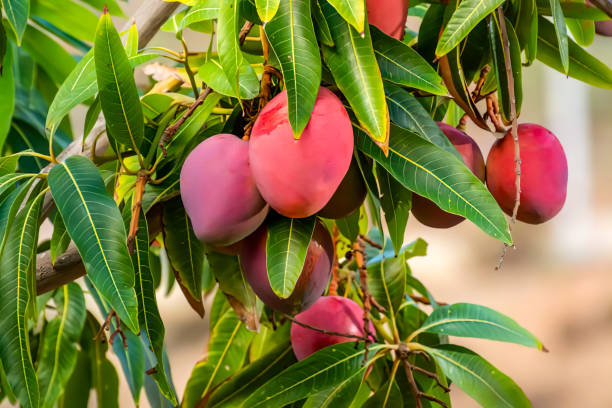
Mangoes are typically grown in tropical and subtropical regions where there is a distinct wet and dry season. The exact timing of the growing season can vary depending on the specific region and climate conditions, but mango trees generally flower and fruit during the warm, dry season. In many regions, mangoes are harvested in the summer months. India is the largest producer of mangoes globally, with the states of Uttar Pradesh, Andhra Pradesh, Karnataka, Bihar, and Gujarat being among the top mango-producing states. Mango trees thrive in well-drained soils with good moisture retention. They can grow in a variety of soil types, including sandy loam, clay loam, and lateritic soils, but they prefer deep, fertile soils with good organic matter content. Mango trees are sensitive to waterlogging, so soils with good drainage are essential to prevent root rot and other issues.
Additionally, mango trees prefer slightly acidic to neutral soil pH levels ranging from 5.5 to 7.5.Mango cultivation requires significant time and resources, especially in terms of land preparation, planting, irrigation, fertilization, pest control, and harvesting. Mango trees take several years to reach maturity and start bearing fruit, typically around 3 to 5 years after planting. Once established, mango trees can continue to produce fruit for decades under proper care and management. Mango cultivation may require inputs such as fertilizers, irrigation, and pest management practices to ensure optimal growth, fruit production, and quality. Additionally, mango harvesting is labor-intensive, requiring skilled labor for climbing trees and hand-picking fruit.
Overall, mango cultivation can be resource-intensive but can also be economically rewarding for growers in regions with suitable climate and soil conditions.
आंबे सामान्यत: उष्णकटिबंधीय आणि उपोष्णकटिबंधीय प्रदेशात घेतले जातात जेथे ओला आणि कोरडा हंगाम वेगळा असतो. वाढत्या हंगामाची अचूक वेळ विशिष्ट प्रदेश आणि हवामानाच्या परिस्थितीनुसार बदलू शकते, परंतु आंब्याची झाडे सामान्यतः उबदार, कोरड्या हंगामात फुलतात आणि फळ देतात. अनेक प्रदेशात उन्हाळ्यात आंब्याची काढणी केली जाते. उत्तर प्रदेश, आंध्र प्रदेश, कर्नाटक, बिहार आणि गुजरात ही राज्ये सर्वोच्च आंबा उत्पादक राज्यांसह, भारत हा जागतिक स्तरावर आंब्याचा सर्वात मोठा उत्पादक आहे. आंब्याची झाडे चांगल्या निचऱ्याच्या जमिनीत चांगली ओलावा टिकवून ठेवतात. ते वालुकामय चिकणमाती, चिकणमाती चिकणमाती आणि लॅटरिटिक मातीसह विविध प्रकारच्या मातीमध्ये वाढू शकतात, परंतु ते चांगल्या सेंद्रिय पदार्थ सामग्रीसह खोल, सुपीक माती पसंत करतात. आंब्याची झाडे पाणी साचण्यास संवेदनशील असतात, त्यामुळे मुळे कुजणे आणि इतर समस्या टाळण्यासाठी चांगला निचरा असलेली माती आवश्यक आहे.
याव्यतिरिक्त, आंब्याची झाडे 5.5 ते 7.5 पर्यंतच्या तटस्थ जमिनीतील pH पातळीपेक्षा किंचित आम्लयुक्त असतात. आंब्याच्या लागवडीसाठी विशेषत: जमीन तयार करणे, लागवड करणे, सिंचन करणे, खत देणे, कीटक नियंत्रण आणि कापणी या दृष्टीने महत्त्वपूर्ण वेळ आणि संसाधने लागतात. आंब्याची झाडे परिपक्व होण्यास आणि फळ देण्यास अनेक वर्षे लागतात, साधारणपणे लागवडीनंतर सुमारे 3 ते 5 वर्षांनी. एकदा स्थापित झाल्यानंतर, आंब्याची झाडे योग्य काळजी आणि व्यवस्थापनाखाली अनेक दशकांपर्यंत फळ देत राहू शकतात. उत्तम वाढ, फळांचे उत्पादन आणि गुणवत्ता सुनिश्चित करण्यासाठी आंबा लागवडीसाठी खत, सिंचन आणि कीटक व्यवस्थापन पद्धती यासारख्या निविष्ठांची आवश्यकता असू शकते. याव्यतिरिक्त, आंबा काढणी श्रम-केंद्रित आहे, झाडावर चढण्यासाठी आणि हाताने फळे उचलण्यासाठी कुशल मजुरांची आवश्यकता आहे.
एकंदरीत, आंबा लागवड संसाधन-केंद्रित असू शकते परंतु योग्य हवामान आणि मातीची परिस्थिती असलेल्या प्रदेशातील उत्पादकांसाठी आर्थिकदृष्ट्या फायदेशीर देखील असू शकते.
9. BANANA / 9.केळी
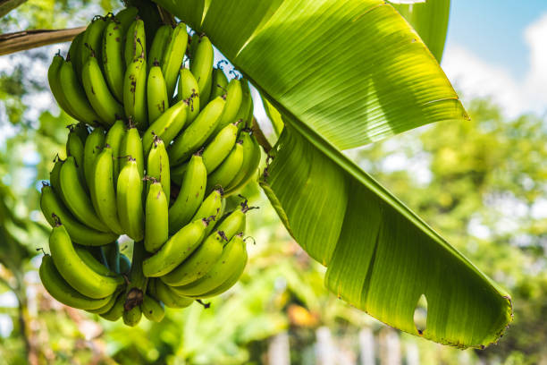
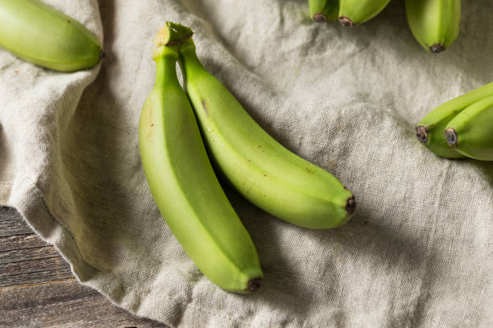
Bananas are typically grown year-round in tropical and subtropical regions where temperatures remain consistently warm. Unlike many other fruit crops, bananas do not have a specific growing season but rather continue to grow and produce fruit throughout the year. However, the exact timing of planting and harvesting can vary depending on the specific region and climate conditions.
Bananas thrive in well-drained, fertile soils with good moisture retention. They prefer deep, loamy soils with high organic matter content and good drainage. Bananas are sensitive to waterlogging, so soils with poor drainage can lead to root rot and other issues. Additionally, bananas prefer slightly acidic to neutral soil pH levels ranging from 5.5 to 7.0. They can tolerate a range of soil types, including sandy loam, clay loam, and volcanic soils, but soil fertility and drainage are critical factors for optimal growth and fruit production.
Banana cultivation requires significant time and resources, especially in terms of land preparation, planting, irrigation, fertilization, pest control, and harvesting. Banana plants typically take around 9 to 12 months to produce fruit after planting, depending on the variety and growing conditions. Once established, banana plants can continue to produce fruit for several years, with some varieties producing multiple harvests from a single plant. Banana cultivation may require inputs such as fertilizers, irrigation, and pest management practices to ensure optimal growth, fruit production, and quality. Harvesting bananas is labor-intensive, requiring skilled labor for cutting bunches and handling fruit. Overall, banana cultivation can be resource-intensive but can also be economically rewarding for growers in regions with suitable climate and soil conditions
.
केळी सामान्यत: वर्षभर उष्णकटिबंधीय आणि उपोष्णकटिबंधीय प्रदेशात उगवतात जेथे तापमान सातत्याने उबदार असते. इतर अनेक फळपिकांच्या विपरीत, केळीचा विशिष्ट वाढीचा हंगाम नसतो, उलट वर्षभर वाढतच राहतो आणि फळ देत असतो. तथापि, लागवड आणि कापणीची अचूक वेळ विशिष्ट प्रदेश आणि हवामान परिस्थितीनुसार बदलू शकते.
केळी चांगल्या निचऱ्याच्या, सुपीक जमिनीत चांगली ओलावा टिकवून ठेवतात. ते उच्च सेंद्रिय पदार्थ सामग्री आणि चांगला निचरा असलेल्या खोल, चिकणमाती माती पसंत करतात. केळी पाणी साचण्यास संवेदनशील असतात, त्यामुळे पाण्याचा निचरा नसलेल्या मातीमुळे मुळांची कुजणे आणि इतर समस्या उद्भवू शकतात. याव्यतिरिक्त, केळी 5.5 ते 7.0 पर्यंतच्या मातीतील pH पातळीपेक्षा किंचित आम्लयुक्त असतात. ते वालुकामय चिकणमाती, चिकणमाती चिकणमाती आणि ज्वालामुखीच्या मातीसह विविध प्रकारच्या माती सहन करू शकतात, परंतु चांगल्या वाढीसाठी आणि फळांच्या उत्पादनासाठी मातीची सुपीकता आणि निचरा हे महत्त्वाचे घटक आहेत.
केळीच्या लागवडीसाठी विशेषत: जमीन तयार करणे, लागवड करणे, सिंचन करणे, खत देणे, कीटक नियंत्रण आणि कापणी करणे या दृष्टीने महत्त्वपूर्ण वेळ आणि संसाधने लागतात.
10. ONION / 10.कांदा
 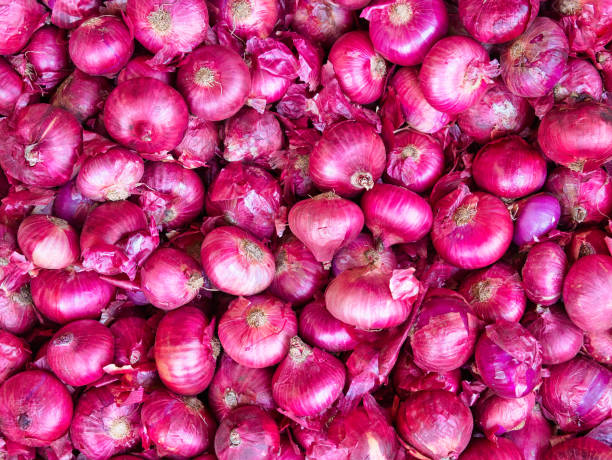
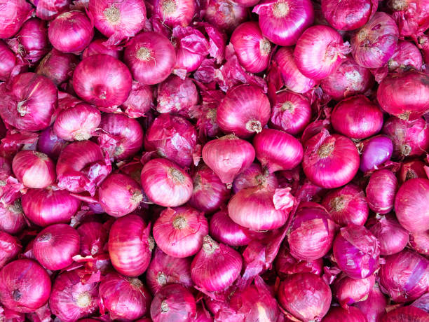
Onions can be grown in both cool and warm seasons, depending on the variety and climate. Generally, they are classified as either short-day, intermediate-day, or long-day onions based on their daylight requirements for bulb formation. Short-day onions are typically grown in the fall and winter in regions with mild winters, while intermediate-day and long-day onions are usually grown in the spring and summer. The exact timing of planting and harvesting can vary depending on the specific variety and local climate conditions.
Onions thrive in well-drained soils with good moisture retention. They prefer sandy loam or loamy soils with high organic matter content and good drainage. Onions are sensitive to waterlogging, so soils with poor drainage can lead to issues like rot and disease. Additionally, onions prefer slightly acidic to neutral soil pH levels ranging from 6.0 to 7.5. Soil fertility is also important for onion growth and bulb development, so adding organic matter or balanced fertilizers before planting can help improve soil quality and productivity.
Onion cultivation requires moderate time and resources compared to some other crops. The time from planting to harvesting typically ranges from 80 to 150 days, depending on the variety and growing conditions. Onions can be grown from seeds, sets (small bulbs), or transplants, with each method having its own advantages and requirements. Onions require regular watering, especially during the early stages of growth, but they are relatively drought-tolerant once established. Additionally, onion cultivation may require inputs such as fertilizers, irrigation, weed control, and pest management practices to ensure optimal growth, bulb formation, and quality. Harvesting onions is labor-intensive, requiring manual digging or lifting of bulbs, but it can be done efficiently with the right tools and techniques. Overall, onion cultivation can be a rewarding endeavor for growers, especially in regions with suitable climate and soil conditions.
विविधतेनुसार आणि हवामानानुसार कांद्याची लागवड थंड आणि उबदार अशा दोन्ही हंगामात करता येते. सामान्यतः, बल्ब तयार करण्यासाठी त्यांच्या दिवसाच्या आवश्यकतेच्या आधारावर त्यांचे वर्गीकरण लहान-दिवस, मध्यवर्ती-दिवस किंवा दीर्घ-दिवसाचे कांदे म्हणून केले जाते. कमी दिवसांचे कांदे सामान्यत: शरद ऋतूतील आणि हिवाळ्यात हलक्या हिवाळ्यातील प्रदेशात घेतले जातात, तर मध्यंतरी दिवस आणि दीर्घकाळ कांदे सहसा वसंत ऋतु आणि उन्हाळ्यात घेतले जातात. लागवड आणि कापणीची अचूक वेळ विशिष्ट विविधता आणि स्थानिक हवामान परिस्थितीनुसार बदलू शकते.
चांगल्या निचरा होणाऱ्या जमिनीत कांदे चांगली ओलावा टिकवून ठेवतात. ते सेंद्रिय पदार्थांचे प्रमाण जास्त आणि चांगला निचरा असलेली वालुकामय चिकणमाती किंवा चिकणमाती माती पसंत करतात. कांदे पाणी साचण्यास संवेदनशील असतात, त्यामुळे पाण्याचा निचरा नसलेल्या मातीमुळे कुजणे आणि रोग यासारख्या समस्या उद्भवू शकतात. याव्यतिरिक्त, कांदे 6.0 ते 7.5 पर्यंतच्या मातीतील pH पातळीपेक्षा किंचित आम्लयुक्त असतात. कांद्याच्या वाढीसाठी आणि बल्बच्या विकासासाठी मातीची सुपीकता देखील महत्त्वाची आहे, म्हणून लागवड करण्यापूर्वी सेंद्रिय पदार्थ किंवा संतुलित खतांचा समावेश केल्यास मातीची गुणवत्ता आणि उत्पादकता सुधारण्यास मदत होते.
इतर काही पिकांच्या तुलनेत कांदा लागवडीसाठी मध्यम वेळ आणि संसाधने लागतात. लागवडीपासून कापणीपर्यंतचा कालावधी सामान्यतः 80 ते 150 दिवसांचा असतो, विविध आणि वाढत्या परिस्थितीनुसार. कांदे बियाणे, सेट (लहान बल्ब) किंवा प्रत्यारोपणापासून घेतले जाऊ शकतात, प्रत्येक पद्धतीचे स्वतःचे फायदे आणि आवश्यकता आहेत. कांद्याला नियमित पाणी पिण्याची गरज असते, विशेषत: वाढीच्या सुरुवातीच्या काळात, परंतु ते स्थापित झाल्यानंतर तुलनेने दुष्काळ-सहिष्णु असतात. या व्यतिरिक्त, कांदा लागवडीसाठी योग्य वाढ, बल्ब निर्मिती आणि गुणवत्ता सुनिश्चित करण्यासाठी खते, सिंचन, तण नियंत्रण आणि कीटक व्यवस्थापन पद्धती यासारख्या इनपुटची आवश्यकता असू शकते. कांद्याची काढणी श्रम-केंद्रित आहे, हाताने खोदणे किंवा बल्ब उचलणे आवश्यक आहे, परंतु ते योग्य साधने आणि तंत्राने कार्यक्षमतेने केले जाऊ शकते. एकंदरीत, कांद्याची लागवड उत्पादकांसाठी, विशेषत: योग्य हवामान आणि मातीची परिस्थिती असलेल्या प्रदेशांमध्ये एक फायद्याचा प्रयत्न असू शकतो.
11. TOMATO / 11.टोमॅटो
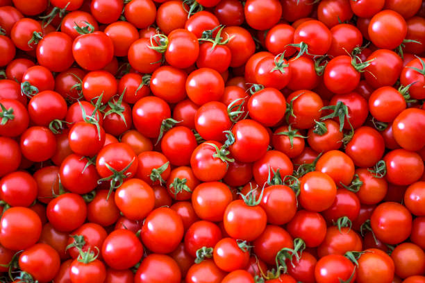
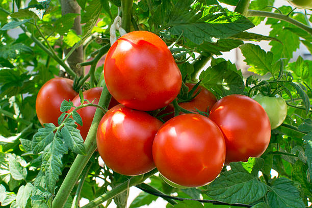
Tomatoes are warm-season crops and are typically grown during the spring and summer months in most regions. They require warm temperatures for optimal growth and fruit development. In areas with mild winters, tomatoes can be grown year-round with appropriate protection from frost.
Tomatoes grow best in well-drained, fertile soils with good moisture retention. They prefer loamy or sandy loam soils with good organic matter content and adequate drainage. Soil pH is also important for tomato growth, with a preferred range of 6.0 to 6.8. Tomatoes are sensitive to waterlogging, so soils with poor drainage can lead to root rot and other issues. Additionally, tomatoes benefit from consistent watering throughout the growing season to maintain even soil moisture levels.
Tomato cultivation requires moderate time and resources compared to some other crops. The time from planting to harvesting varies depending on the variety, but most tomatoes can be harvested 60 to 90 days after transplanting. Tomatoes can be grown from seeds or transplants, with transplants often preferred for earlier harvests and better disease resistance. Tomatoes require regular watering, fertilization, and pest and disease management to ensure optimal growth and fruit production. Additionally, support structures such as stakes or trellises may be needed to support the plants as they grow and bear fruit. Overall, tomato cultivation can be a rewarding endeavor for growers, especially when proper care and management practices are followed.
टोमॅटो ही उबदार हंगामातील पिके आहेत आणि बहुसंख्य प्रदेशांमध्ये वसंत ऋतु आणि उन्हाळ्याच्या महिन्यांत उगवले जातात. त्यांना चांगल्या वाढीसाठी आणि फळांच्या विकासासाठी उबदार तापमानाची आवश्यकता असते. सौम्य हिवाळा असलेल्या भागात, दंवपासून योग्य संरक्षणासह टोमॅटो वर्षभर वाढू शकतात.
टोमॅटो चांगल्या निचऱ्याच्या, सुपीक जमिनीत चांगले वाढतात ज्यामध्ये ओलावा चांगला असतो. ते चांगल्या सेंद्रिय पदार्थांचे प्रमाण आणि पुरेसा निचरा असलेली चिकणमाती किंवा वालुकामय माती पसंत करतात. 6.0 ते 6.8 च्या पसंतीच्या श्रेणीसह टोमॅटोच्या वाढीसाठी मातीचा pH देखील महत्त्वाचा आहे. टोमॅटो हे पाणी साचण्यास संवेदनशील असतात, त्यामुळे पाण्याचा निचरा नसलेल्या मातीमुळे मुळांची सडणे आणि इतर समस्या उद्भवू शकतात. याव्यतिरिक्त, टोमॅटोला संपूर्ण वाढीच्या हंगामात सातत्यपूर्ण पाणी दिल्याने फायदा होतो जेणेकरून जमिनीतील ओलावा टिकवून ठेवता येईल.
इतर काही पिकांच्या तुलनेत टोमॅटो लागवडीसाठी मध्यम वेळ आणि संसाधने लागतात. लागवडीपासून काढणीपर्यंतचा कालावधी विविधतेनुसार बदलतो, परंतु बहुतेक टोमॅटो लावणीनंतर 60 ते 90 दिवसांनी काढता येतात. टोमॅटो बियाण्यांपासून किंवा प्रत्यारोपणापासून घेतले जाऊ शकतात, प्रत्यारोपणाला बहुतेक वेळा पूर्वीच्या कापणीसाठी आणि रोग प्रतिकारशक्तीसाठी प्राधान्य दिले जाते. टोमॅटोला योग्य वाढ आणि फळांचे उत्पादन सुनिश्चित करण्यासाठी नियमित पाणी देणे, खत देणे आणि कीटक आणि रोग व्यवस्थापन आवश्यक आहे. याव्यतिरिक्त, झाडे वाढतात आणि फळ देतात तेव्हा त्यांना आधार देण्यासाठी स्टेक्स किंवा ट्रेलीसेससारख्या आधारभूत संरचनांची आवश्यकता असू शकते. एकूणच, टोमॅटोची लागवड उत्पादकांसाठी एक फायद्याचा प्रयत्न असू शकतो, विशेषत: जेव्हा योग्य काळजी आणि व्यवस्थापन पद्धतींचे पालन केले जाते.
 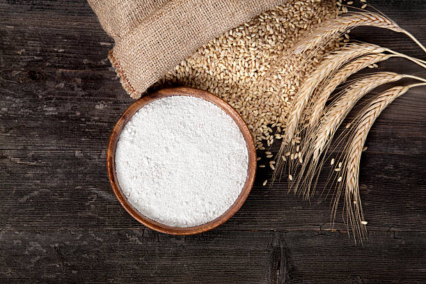
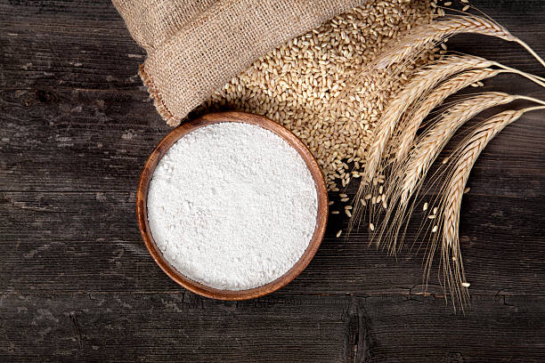 
 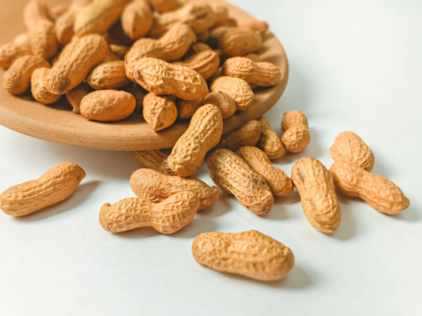
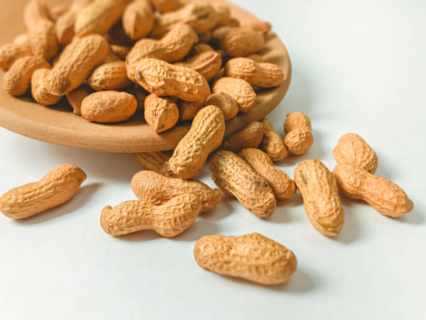